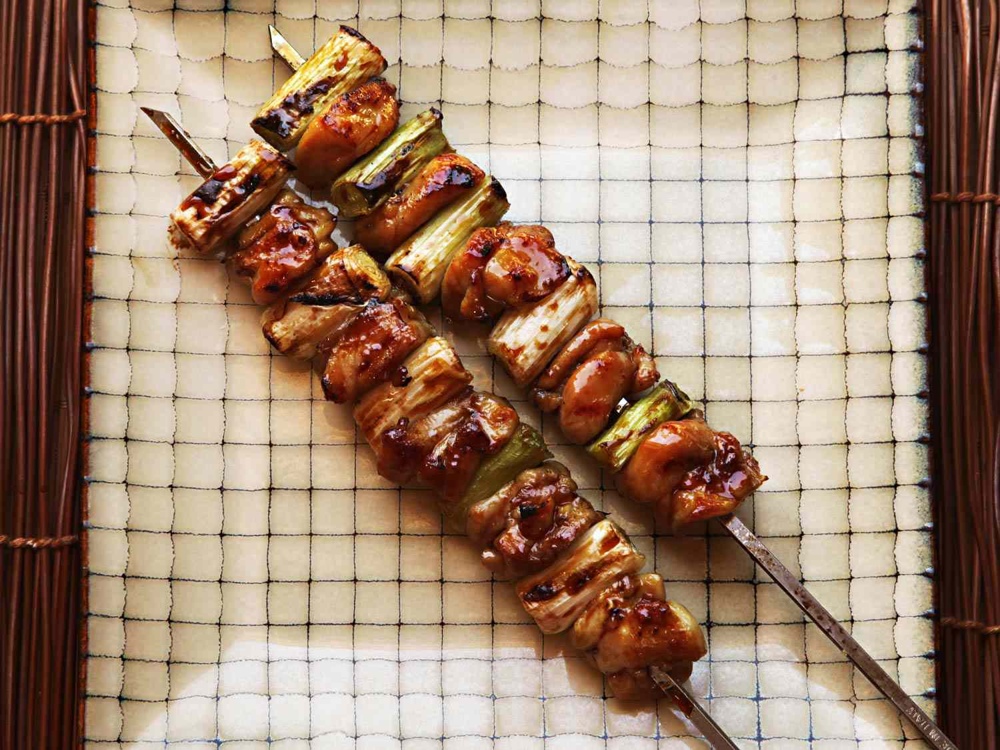

Chicken Yakitori

Description
Chicken yakitori is an easy Japanese dish to make at
home. Serve with white rice and sake for an easy but
special meal!
Ingredients
- 10 wooden skewers
- 4 skinless, boneless chicken thighs, cut into
1-inch cubes
- 4 scallions, sliced into 1-inch pieces
- 1/2 cup sake
- 1/2 cup soy sauce
- 3 tablespoons mirin
- 2 tablespoons white sugar
- 1 teaspoon vegetable oil, or to taste